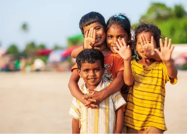
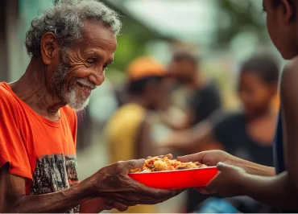
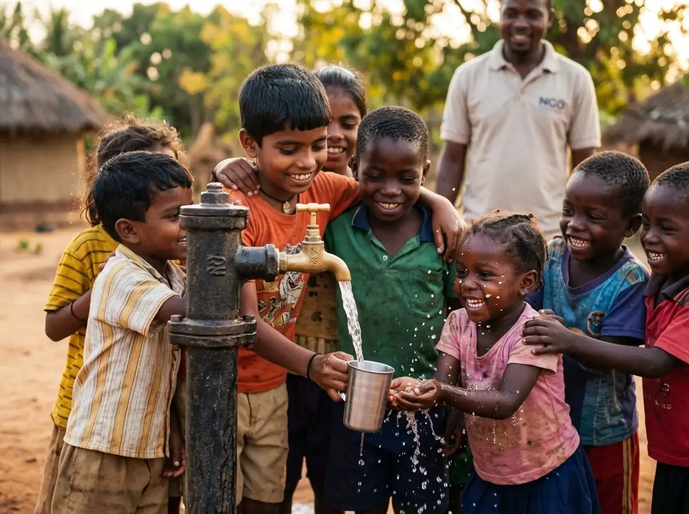
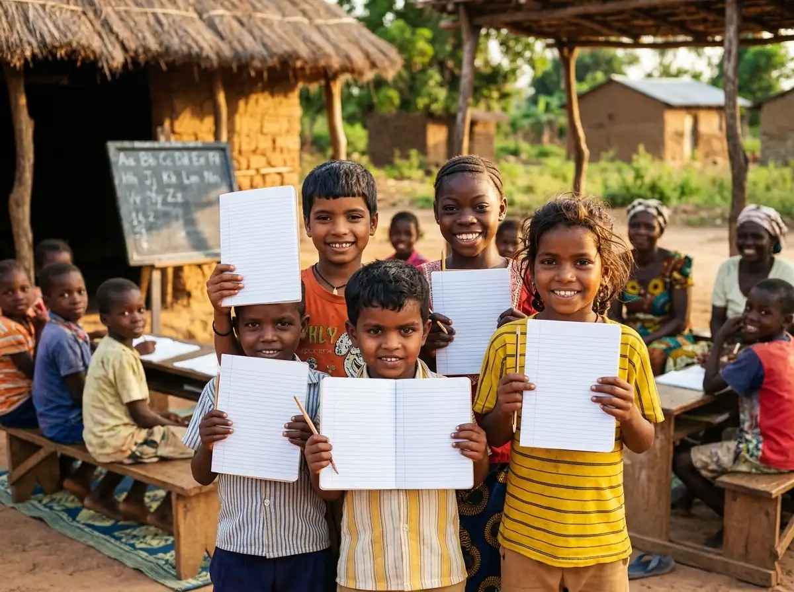

Editor's Choice: Field Dispatch of the Month
From Arid Despair To Thriving Gardens: How Solar Water Wells Changed 12 Villages Forever
In deep southern drylands, women and children once walked over four hours daily under scorching sun merely to draw turbid river water. Read how 1,200 micro-donors mobilized to fund 4 deep-aquifer solar pumping stations that eliminated waterborne cholera, revitalized community crops, and enabled 350 young girls to return full-time to the classroom.
Explore Stories By Impact Sector
Filter through field updates, medical case studies, and volunteer diaries organized by cause.
Voices From The Frontlines
Meet the dedicated journalists and field photographers documenting relief operations in remote communities.
Trending Topics & Community Discussions
Discover the key issues our field journalists, volunteers, and policy readers are actively debating this month.
Visual Essay: A Day with Nilgiris Hill Mobile Clinic
Follow photojournalist Tariq Al-Mansoor as our off-road 4x4 clinic navigates mountain hairpin turns to bring vital pediatric triage to 85 indigenous children.
Crossing Mountain Mist to Deliver Life-Saving Pediatric Inoculations
"At 6,200 feet above sea level, modern paved roads dissolve into boulder-strewn paths. For mothers in tribal hamlets like Thanthai, reaching the district hospital requires an arduous 6-hour trek carrying sick infants on foot. When our mobile team arrives, early intervention turns what would be fatal respiratory infections into routine recoveries."
Published Field Studies & Research Whitepapers
Our research division analyzes health datasets and hydrological survey data to publish peer-reviewed open-access whitepapers for policy makers and non-profit leaders.
Childhood Malnutrition Index & Dietary Interventions
Solar Desalination & Deep Aquifer Recharge
Digital Classrooms & STEM Retention in Rural Girls
Letters From Readers, Donors & Field Staff
Selected feedback and grassroots perspectives submitted to our editorial mailbox.
Perumal K.
Tribal Village Headman"The day your solar water pump roared to life and clean, crystal water gushed out, our elders wept with joy. For the first time in 40 years, our daughters go to school instead of trekking for water."
Ananya S.
Rural State High School Teacher"The donated tablets did not just teach computer algorithms; they ignited fierce ambition. Fourteen girls from our rural class just registered for university entrance tests!"
Liam O'Connor
Monthly Guardian Donor"Seeing the itemized receipt and GPS photo of my donated surgical pack in a village clinic restored my faith in international charity. Honest, transparent journalism at its best."
Community Poll of the Month
We seek direct input from our global community to determine where our next mobile clinic van should be deployed in 2027.
Where should our 13th Mobile Pediatric Clinic be stationed?
Cast your vote below. Voting closes on November 30, 2026. Over 1,840 votes cast so far.